Turbocharge your
innovation process
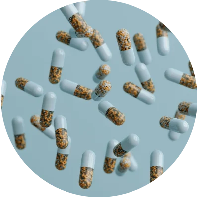
Real-time supplier sourcing and pricing estimates to speed up production timing
have conversations about every aspect of formulation, with the research right at hand
generative AI research and recommendations to rapidly accelerate innovation
explore by health benefit or ingredients to create new formulations at speed
summaries written with exacting detail, linked directly to the relevant research
See IngredientAI in action
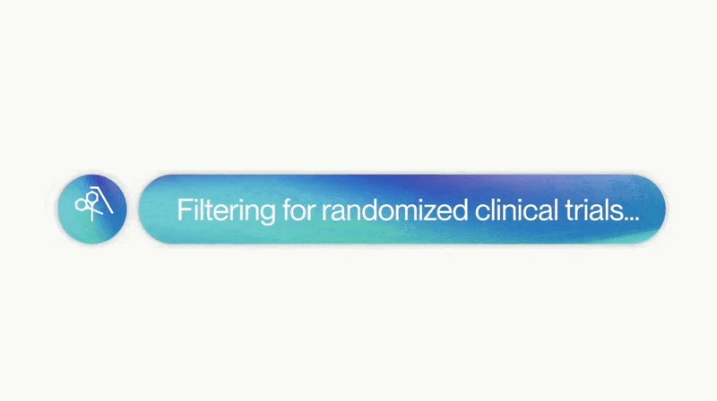
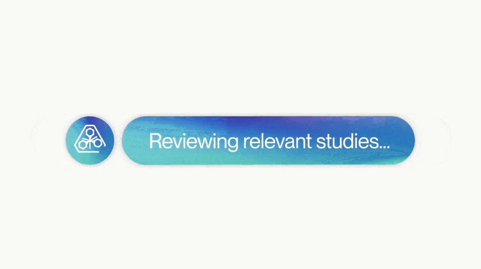
Join the best in the
supplement industry
Our product is accelerating the innovation process for multiple leading supplement brands.
Our early adopters
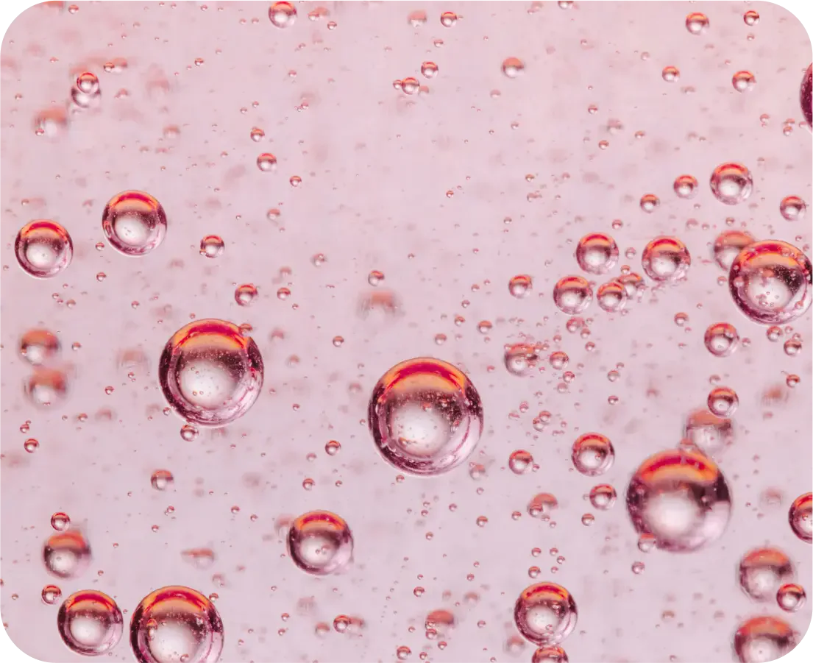
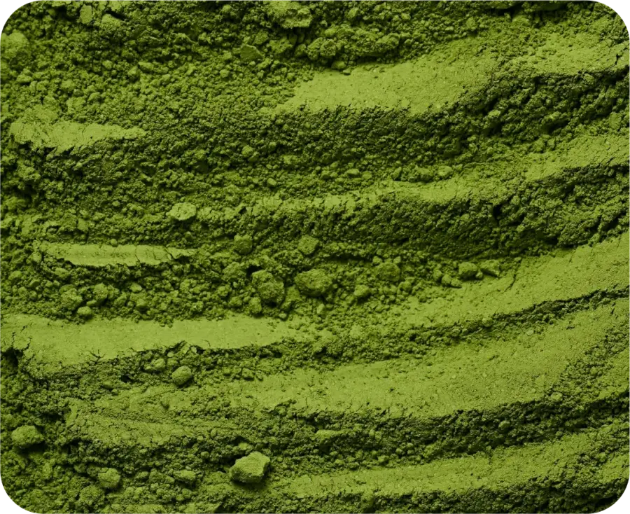
Discover new
ingredients faster
No more manual deep-dives. IngredientAI instantly surfaces relevant insights from tens of millions of studies, allowing you to dive right into synthesizing ideas.
Focus your research on a specific ingredient, or a specific health benefit
Review summaries at speed, while also retaining access to the relevant research
Instantly review
every claim
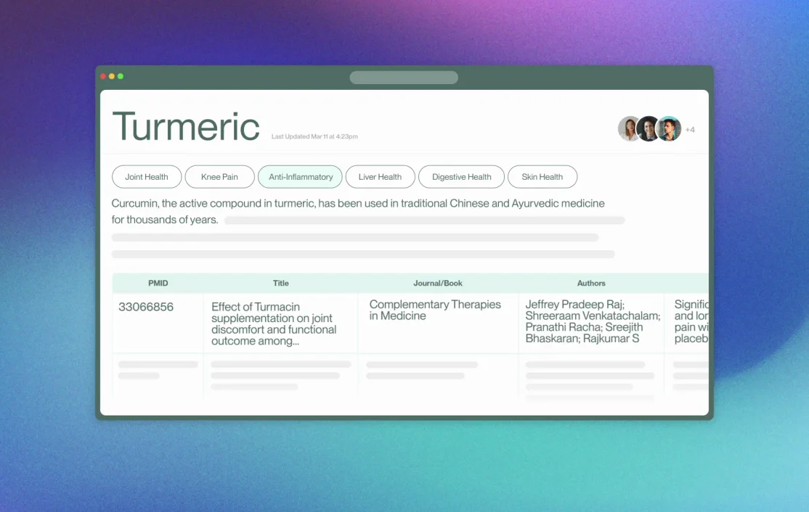
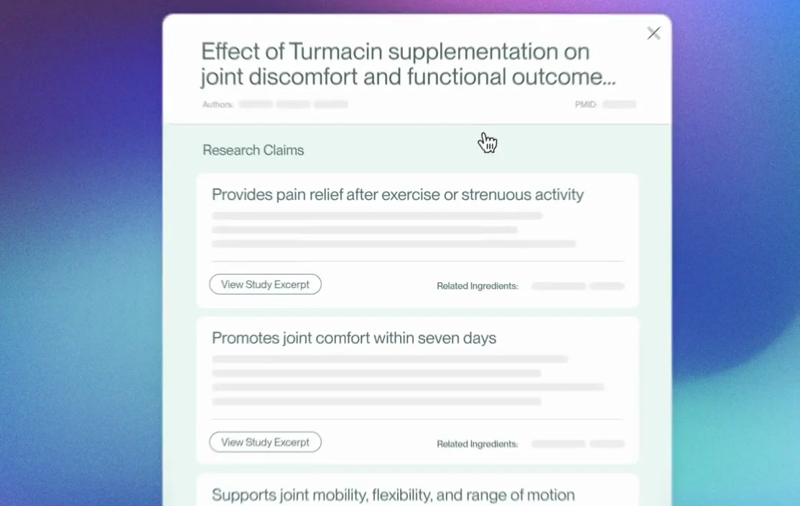
Conduct comprehensive claims substantiation in minutes, with unprecedented accuracy ensuring every claim is reviewed.
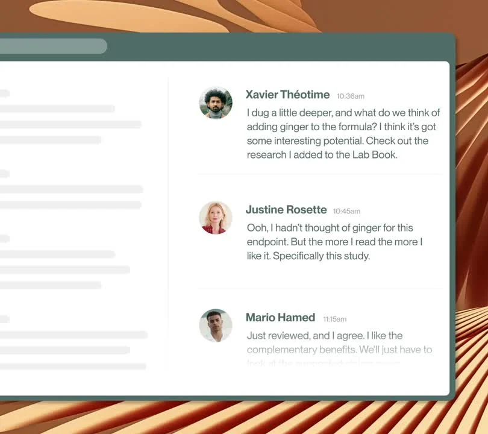
Teamwork made
seamless
Bring your team together to align, analyze, and drive innovations, all with the research right at hand.
Hold collaborative conversations about research, benefits, formulations, costs, compliance, and more
Keep the conversation connected to the research, with links directly to relevant studies, summaries, and work
Dynamic company
matching
Our intelligent AI matching pairs qualified buyers with verified suppliers, tailored around specific ingredient requests.
Then, our platform enables digital NDA exchanges, allowing for seamless, private sharing of proprietary studies and technical data. Plus we have auto-populated forms, auto-generated summaries and documents, and direct RFQ submission, for seamless sourcing from start to finish.
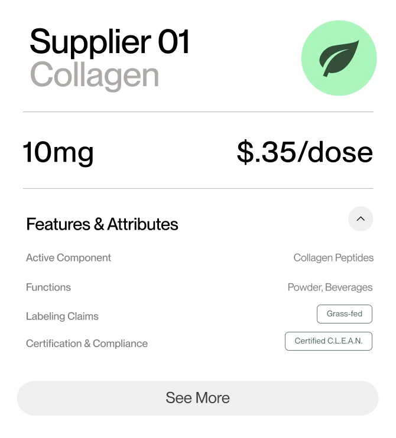
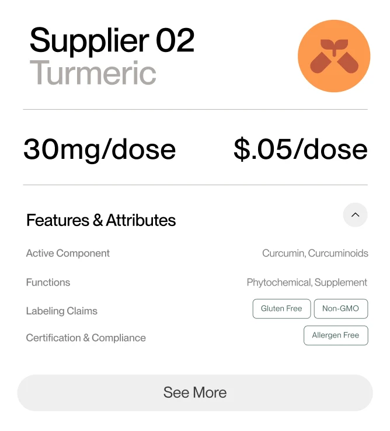
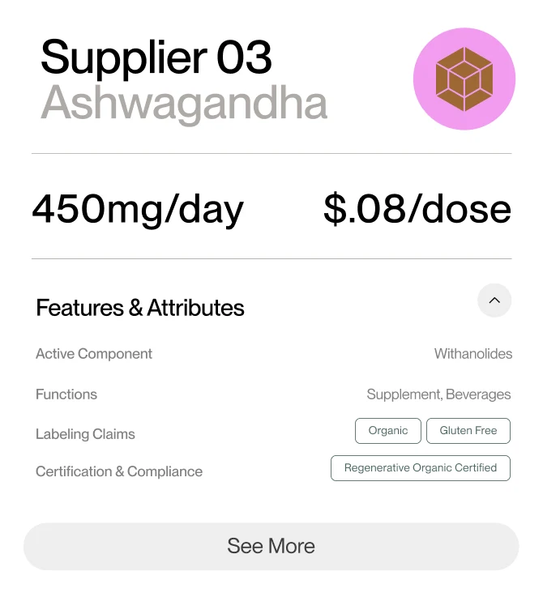
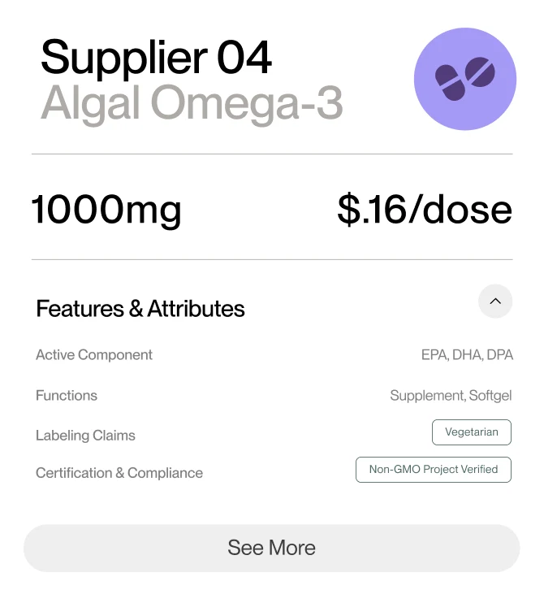
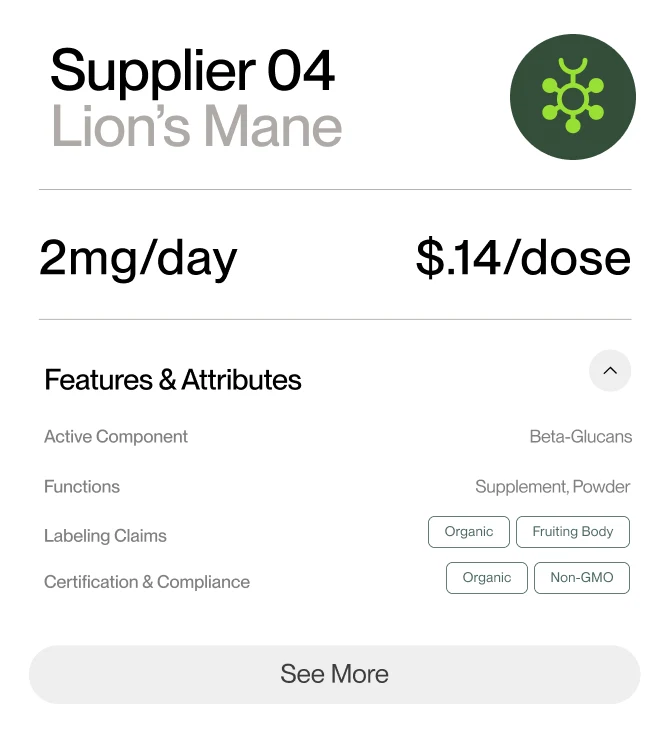
One-Click Dossier
Generation
Reduce the time needed to launch new products with ready-to-review dossiers, seamlessly generated by IngredientAI.
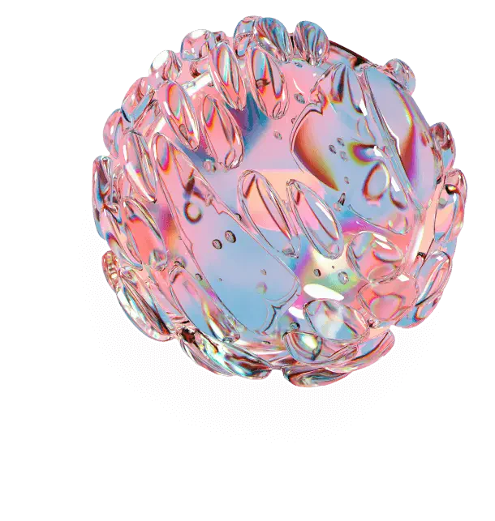
Trust and security are
our gold standard
Enterprise-
level security
Restricted access that stays within your company's firewalls.
Built with
privacy first
All of your team’s work stays yours, entirely confidential.
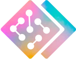
You own your
data
We do not use or train on your data. It's yours (and yours only).
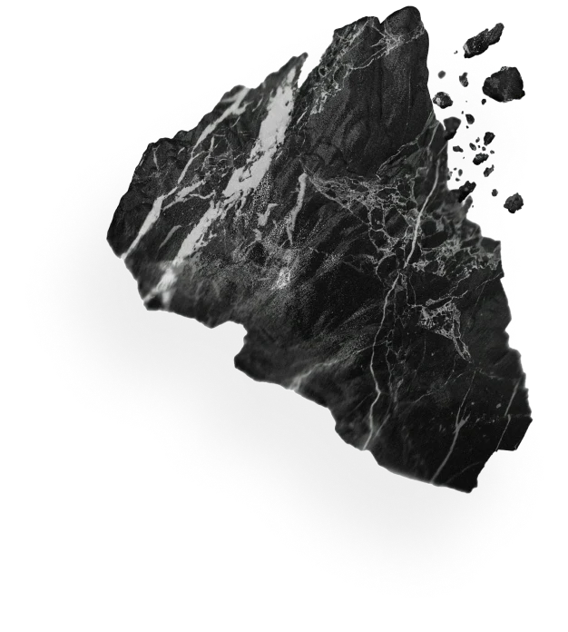
The IngredientAI
difference
Accurate, comprehensive formulation research at incredible speed
Seamless digital collaboration, from claims substantiation to supply chain
Hassle-free compliance, with automatic dossier generation